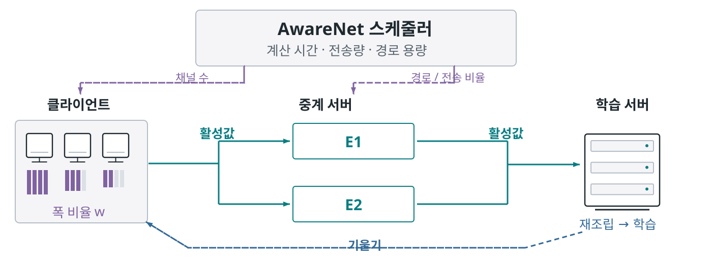
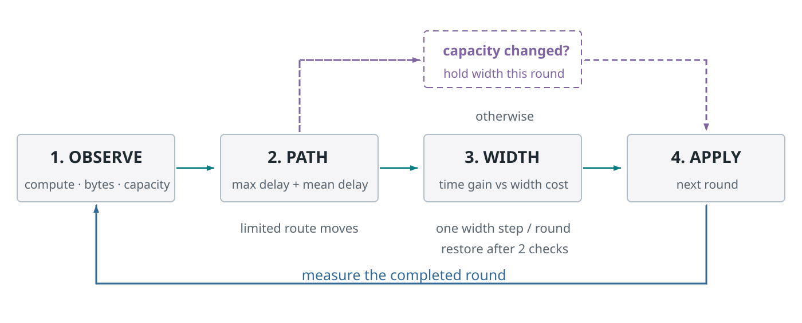
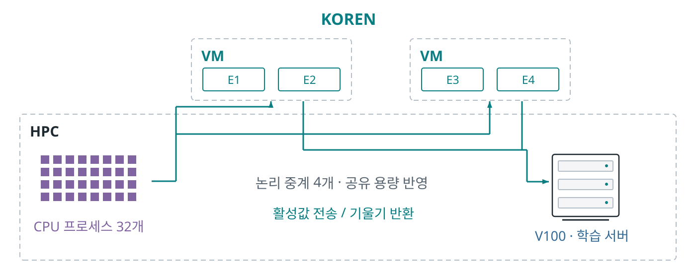
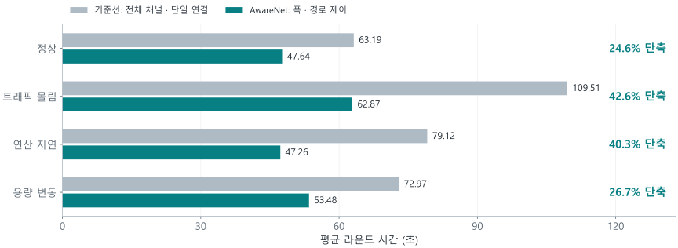
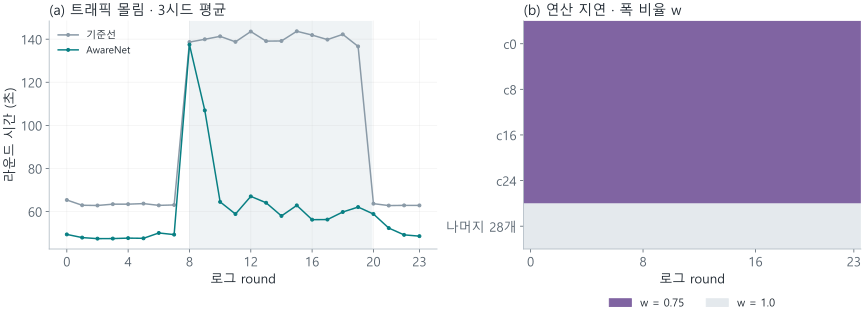
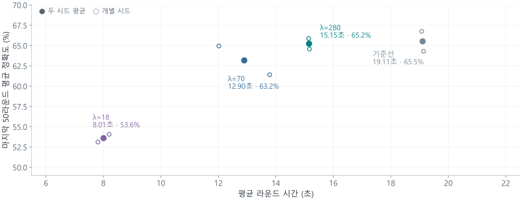
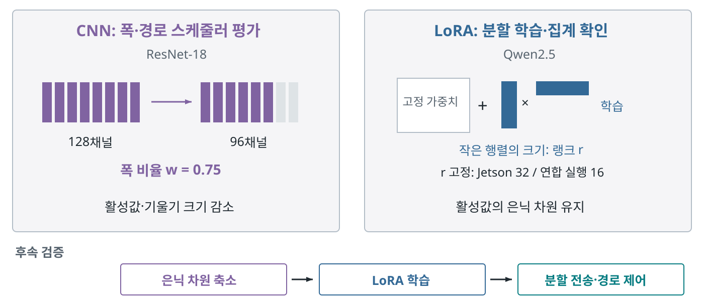
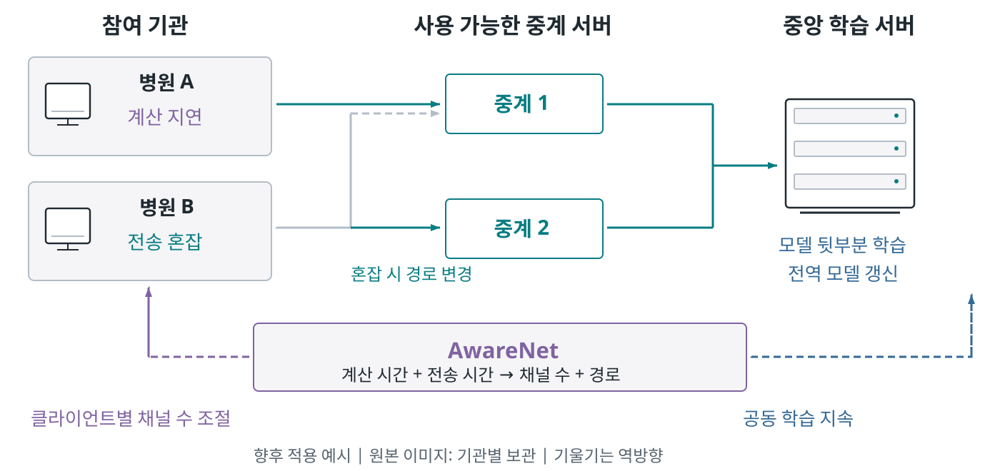

AwareNet의 구성과 학습 흐름

클라이언트는 앞부분, 서버는 뒷부분을 학습하고 중계 서버는 텐서 조각을 전달한다.
SVG · PNG구조 → CNN 모델 폭 → 제어 절차 → 실험 배치 → 결과 → LoRA 보조 실험 → 활용 예시.

클라이언트는 앞부분, 서버는 뒷부분을 학습하고 중계 서버는 텐서 조각을 전달한다.
SVG · PNG
계층 구조와 분할 위치를 유지하면서 사용할 채널 수를 조절한다. 축소의 시간 이득과 정확도 변화를 함께 평가한다.
SVG · PNG
경로 평가 뒤에 폭의 비용을 비교하고, 변경 속도와 복귀 조건으로 제어를 안정화한다.
SVG · PNG
HPC 안의 논리 클라이언트들이 KOREN의 두 VM을 경유하여 학습 서버와 텐서를 교환한다.
SVG · PNG
32프로세스·3시드. 각 24라운드의 초기 4라운드를 제외한 시드 평균을 집계했다.
SVG · PNG
몰림 구간과 시간 응답, 연산 지연 클라이언트 네 개의 폭 선택을 원로그에서 확인했다.
SVG · PNG
8프로세스·200라운드·2시드. 평가 대상은 CIFAR-10 시험 집합의 앞 2,000개다.
SVG · PNG
위: 기존 CNN과 고정 랭크 LoRA 실험. 아래: 은닉 차원 축소와 LoRA를 결합하는 후속 검증 설계.
SVG · PNG
각 병원의 클라이언트가 허용된 중계 서버를 거쳐 중앙 학습 서버와 함께 전역 모델을 개선하는 향후 적용 예시.
SVG · PNG